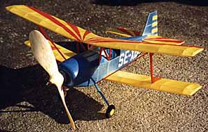
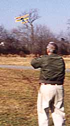

Model by Bill Simpson
 Above is a picture of my Andreason. I have since changed to a 6" Peck prop, but have not flown it yet in that configuration. I will E-Mail you the times when I do so. I have flown it in Durham, Ct on December 5th but was not happy with the the flight duration. (didn't time it). It spiralled in when the motor stopped. I threw in a pic of it flying on Dec 5th. Both Bob Thompson and David Stott, Peanut scale founders, were there to witness the flights.
Bill Simpson